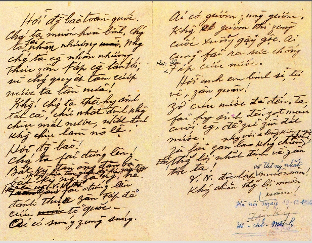
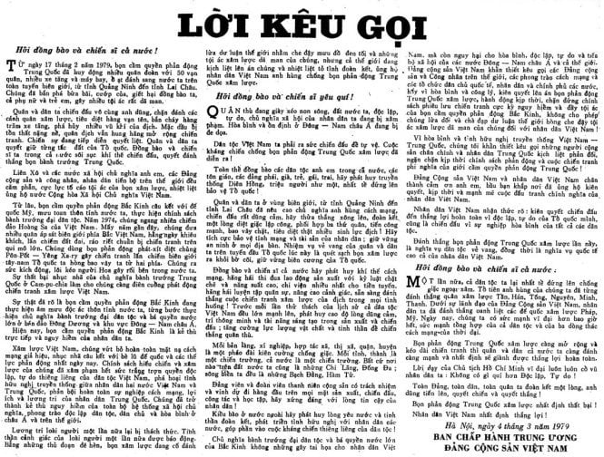

Thứ nhất, Bảo vật Quốc gia "Đường Kách mệnh" là sự vận dụng sáng tạo lý luận của chủ nghĩa Mác - Lênin
trong
đấu tranh giải phóng dân tộc gắn với cách mạng vô sản, là nền tảng cho việc tìm hướng đi mới cho sự
nghiệp
giải phóng dân tộc của cách mạng Việt Nam và được coi là văn kiện lý luận chính trị đầu tiên của Đảng,
đặt
cơ sở tư tưởng cho đường lối cách mạng Việt Nam.
Thứ hai, Bảo vật Quốc gia “Nhật ký trong tù” của Chủ tịch Hồ Chí Minh để lại, giúp chúng ta hình dung
được
thế giới tâm hồn nhiều cung bậc của Người, thấy được tầm vóc trí tuệ của một chân dung vĩ đại, với khát
vọng
cao đẹp nhất là "Độc lập cho dân tộc và Tự do cho con người".

Lời kêu gọi toàn quốc kháng chiến
Thứ ba, Bảo vật Quốc gia "Lời kêu gọi toàn quốc kháng chiến". Đây là bản viết tay của Chủ tịch Hồ Chí
Minh,
có giá trị lịch sử như một Cương lĩnh kháng chiến, chứa đựng những quan điểm cơ bản về tư tưởng, đường
lối
chiến tranh nhân dân, khơi dậy mạnh mẽ tinh thần yêu nước, truyền thống anh hùng, bất khuất, quyết hi
sinh
để giành lại độc lập cho dân tộc; là mệnh lệnh tiến công cách mạng, tạo khí thế để nhân dân cả nước đứng
lên
chiến đấu với mọi vũ khí sẵn có với một ý chí quyết đánh đuổi quân xâm lược ra khỏi bờ cõi Việt Nam.

Lời kêu gọi đồng bào cả nước
Thứ tư, Bảo vật Quốc gia “Lời kêu gọi đồng bào và chiến sĩ cả nước” là một văn kiện lịch sử có giá trị
như
một lời hịch kêu gọi toàn dân tộc, một cuộc vận động lớn để toàn Đảng, toàn quân và toàn dân tộc đoàn
kết,
thống nhất ý chí và hành động, củng cố niềm tin, siết chặt đội ngũ để bước vào giai đoạn quyết liệt nhất
của
cuộc kháng chiến chống Mỹ cứu nước.
Thứ năm, “Bản Di chúc của Chủ tịch Hồ Chí Minh” - bảo vật Quốc gia cuối cùng mà Người để lại là sự kết
tinh
tinh thần tư tưởng, đạo đức và tâm hồn cao đẹp suốt đời phấn đấu hi sinh vì nước vì dân; vạch ra những
định
hướng mang tính cương lĩnh cho sự phát triển của đất nước sau khi kháng chiến thắng lợi; là những lời
căn
dặn thiết tha; là sức mạnh thôi thúc toàn dân tộc hành động trong xây dựng và bảo vệ Tổ quốc.
Việc tôn vinh 5 bảo vật Quốc gia của Người không chỉ nhằm ngợi ca các giá trị di sản mà Chủ tịch Hồ Chí Minh
để
lại, mà còn giúp cho mỗi chúng ta có thể soi mình vào tấm gương đạo đức vĩ đại của Người để tin tưởng và đem
hết
tài năng, sức lực cống hiến cho độc lập, tự do của Tổ quốc, cho sự phát triển của đất nước.